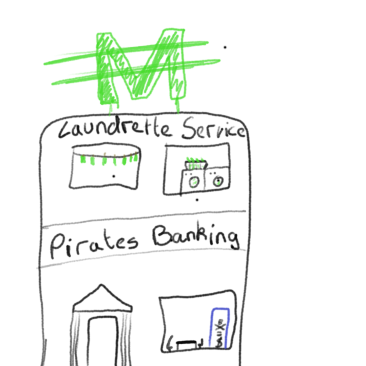

Rules
The Pirate Game is an activity where each person in the game, on their Pirate game worksheet, places a set of symbols and values in a 7 by 7 blank grid. The grid is labelled A-G across the columns and 1-7 down the rows. Therefore, you could place a 'shield' in A6, a '1000' in C4 etc etc. The activity then starts with the youngest competitor selecting a grid reference, let’s say F1. Everyone then crosses off that grid reference and gets whatever symbol/value is in that grid reffernce. If they get a value they add this to their 'score' and this is kept as a running total throughout the game. If they get a symbol, there is a particular purpose to each of these and they need to act accordingly. Play continues in a clockwise direction (unless someone activates their Choose option – see below). Any of the actions listed can be adapted (or abandoned) according to the group size, age of players or personal preference. Oh, the winner is the player at the end of the activity that has the highest score when both their 'bank' and their ongoing score are combined.
The Symbols
| Symbol | Definiton |
|---|---|
 |
Pirate Ship - This allows the player to 'rob' someone else's points (they must put their hand up if they get this symbol in their grid ref and say who they want to 'rob') |
 |
Dagger - This symbol allows the player to wipe out another player’s points returning them to 0!. |
 |
Gift - This allows the player to give a 'present' of 1000 points to another individual (they must say who they want to give the 1000 points to) |
 |
Swap points - This allows the play to swap their points with another person's. Choose - this symbol allows the player to pick the next grid ref to be selected. |
 |
Shield - This symbol allows the player to 'block' any wrong doing to them and once this is crossed off in their grid should be placed in the 'shield' section on their worksheet. It can be used at any time once got but only once! |
 |
Mirror - This symbol allows the player to 'mirror' any wrong doing to them back to the person that was doing the wrong doing. Once this is crossed off in their grid it should be placed in the 'mirror' section on their worksheet. It can be used at any time once got but only once! The mirror allows whatever was going to happen to the individual to happen to the attacking player. i.e. if someone wanted to 'rob' me of my points and I used my mirror then I would 'rob' their points! |
 |
Bomb - If the player is unlucky enough to get this symbol in their grid ref their points will go to 0. |
|  | Bank - This symbol allows any points the player has to be banked (these points are then safe for the rest of the game and cannot be stolen or wiped out!) |